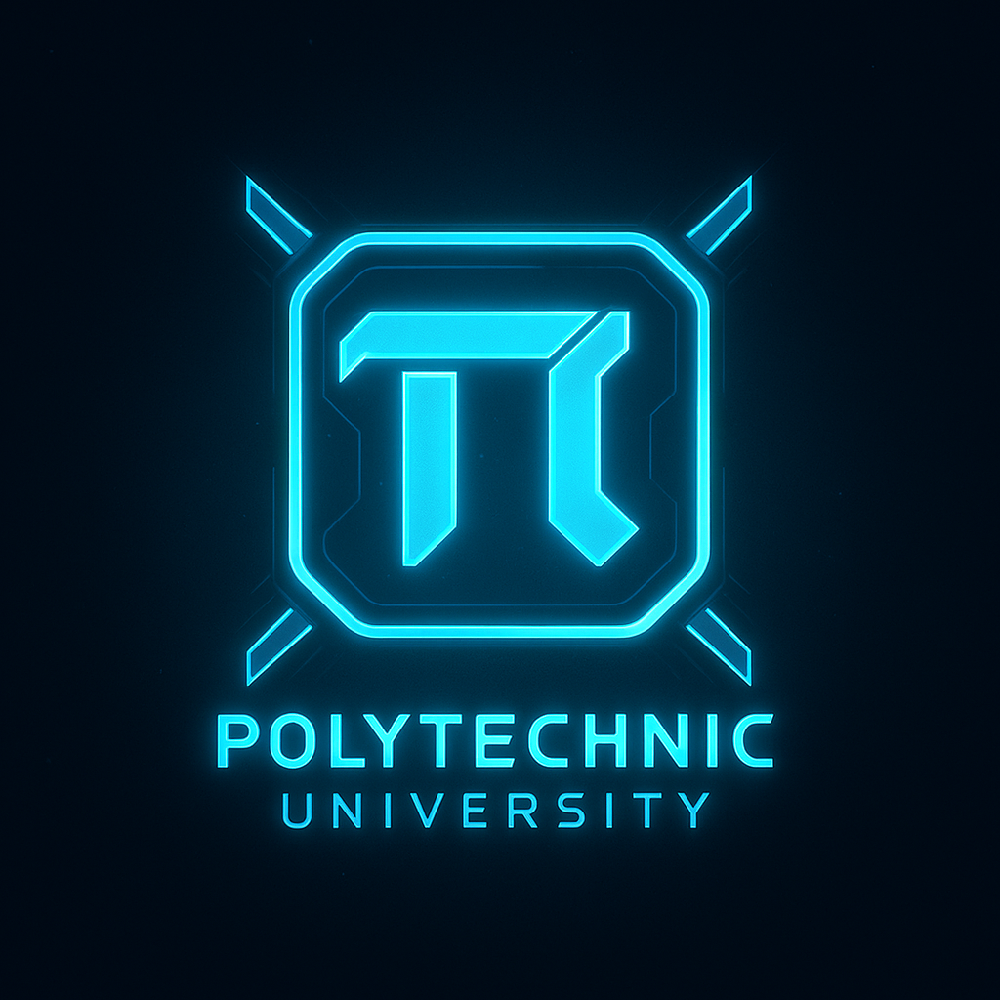
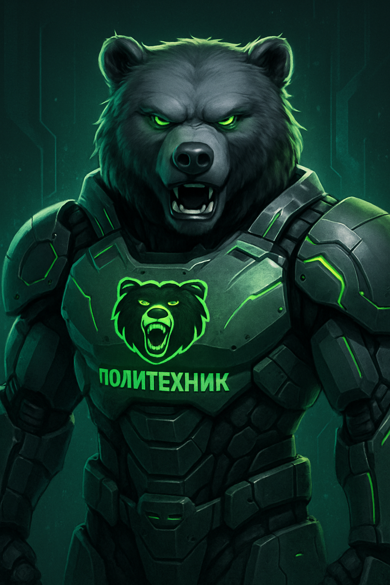
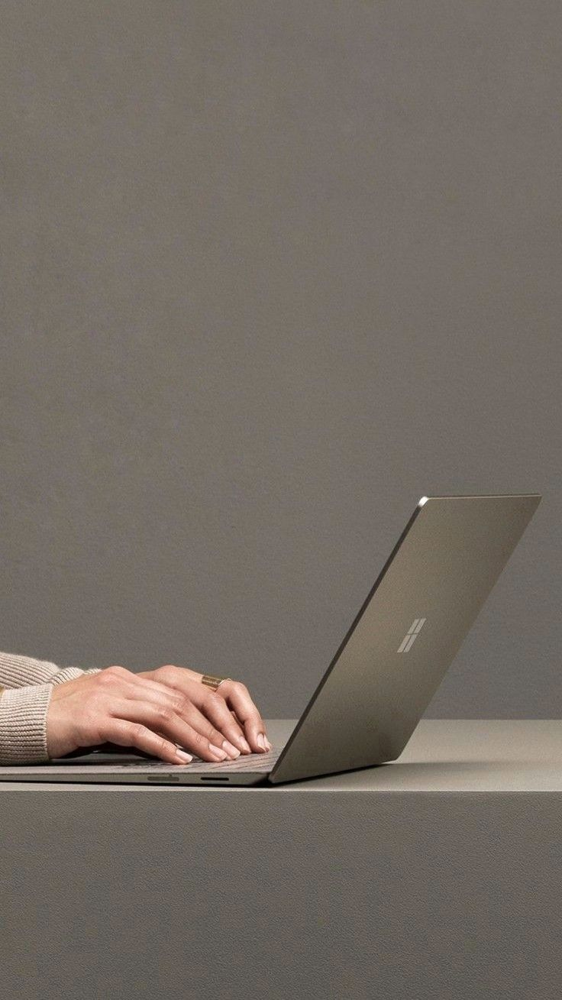

Учебный портал по веб-разработке
Добро пожаловать на учебный портал, который создан специально для отработки навыков верстки,
работы с JavaScript и языка PHP. Этот сайт является учебным проектом: на нём можно
экспериментировать с расположением блоков, проверять адаптивность верстки и добавлять
новые элементы интерфейса. В дальнейшем портал можно использовать в рамках курса
серверного программирования, расширяя его функциональность за счёт работы с формами,
базами данных и авторизацией пользователей.
Главная страница содержит текст и изображения, которые расположены в одном общем блоке.
Это позволяет оценить, как ведёт себя верстка при изменении ширины окна браузера.
На крупных экранах текст и картинки располагаются рядом, а на телефонах блоки
аккуратно перестраиваются друг под другом. Такой подход демонстрирует современный
принцип адаптивного дизайна, при котором сайт остаётся удобным и читаемым на любых
устройствах: от компьютера до смартфона.
В верхней части сайта расположена шапка с логотипом, меню навигации и названием портала.
Логотип выполнен только средствами CSS: это цветной прямоугольник с градиентной заливкой
и надписью «WP», которая расшифровывается как WebPortal. Меню позволяет перейти к
страницам с заданиями и к описанию курсовой работы. Такие элементы, как единая шапка
и подвал с контактной информацией, подключаются через шаблоны, что позволяет избежать
дублирования кода и упростить сопровождение проекта.


